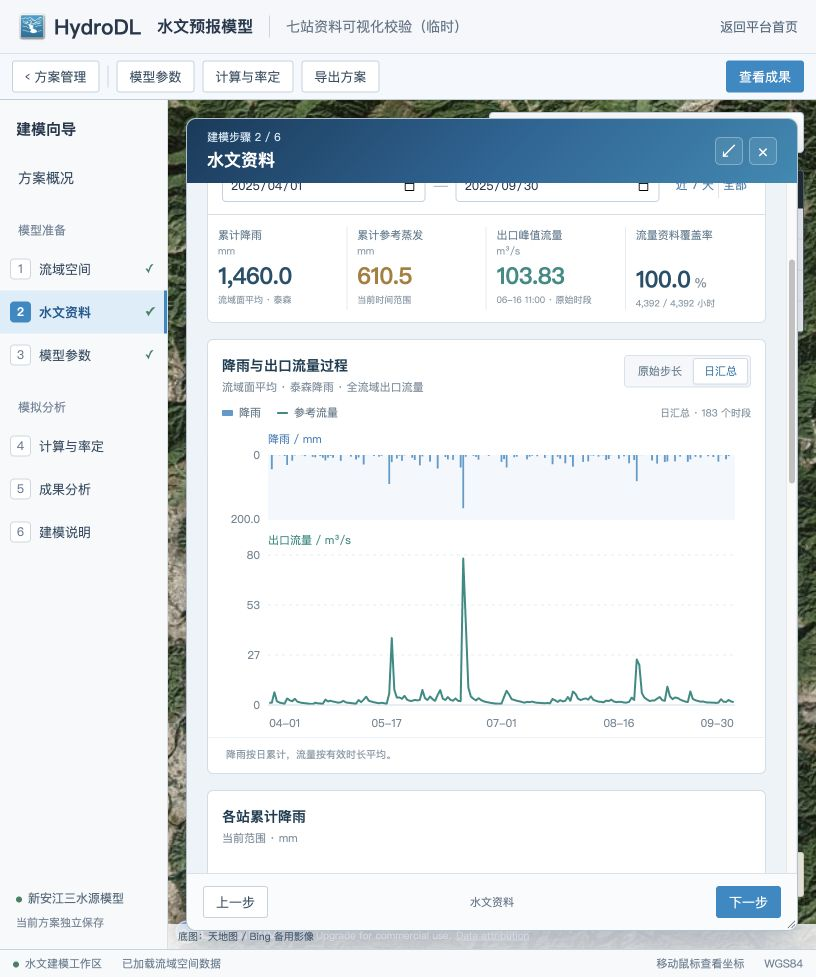
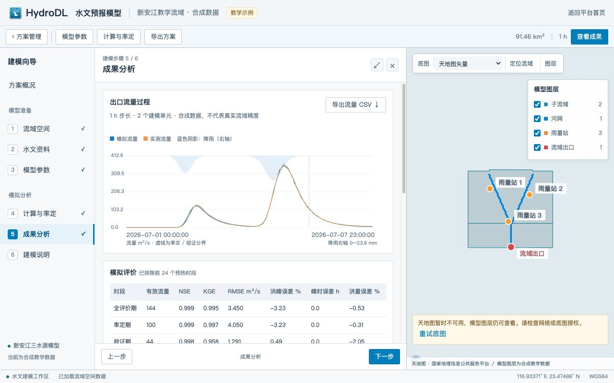
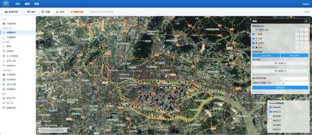
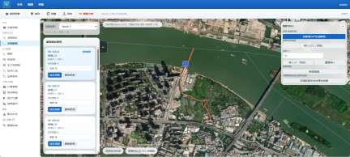
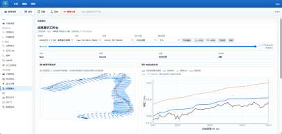
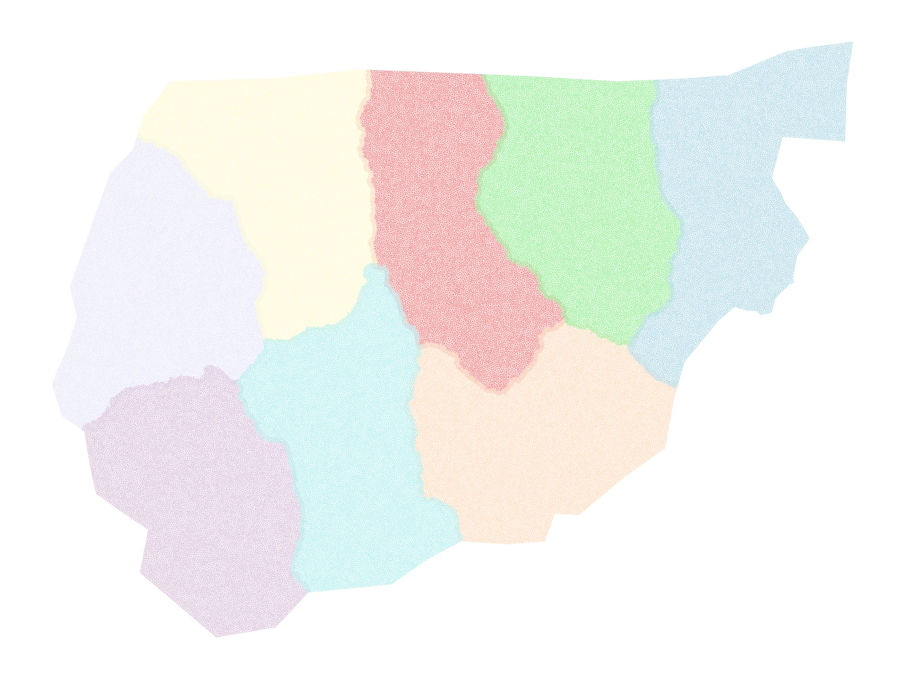

Portal
从门户进入建模
按研究对象选择模型，再以计算方案管理输入、参数与结果。
门户中的其他方向
一维管网、城市内涝点、风暴潮与工程应力分析也在门户中列为模型方向。各模块的实现与完善程度不同。
地图与方案
建模界面以遥感影像为底图，并可切换其他底图或仅显示模型图层。下方为项目界面截图；本页面是平台介绍，不是在线计算入口。
Hydrological modelling
水文预报：从地形到流量
案例：广东 DEM 示例流域与新安江教学流域。
以流域出口为起点
广东示例从 DEM 和出口位置出发，提取约 64.35 km² 的集雨范围、河网与 5 个子流域；在地图上布设 3 个合成雨量站，并计算泰森面积权重，为子流域组织降雨输入。
从资料到模拟
整编降雨、蒸发与出口流量时序，配置新安江三水源模型参数，通过 PSO 搜索候选参数，再对率定期与验证期进行过程和指标比较。
示例采用真实地形和合成水文资料，教学结果用于展示建模流程，不代表真实流域预报精度。当前版本将子流域流量汇总至出口，尚未逐河段演算。




One-dimensional modelling
一维水动力：沿河网演算
案例：河网与断面驱动的一维水动力建模。
组织河道与断面
在影像地图中建立河段和节点的拓扑关系，导入或编辑断面及高程资料，按需要进行断面插值与加密，并配置糙率、水工建筑物、初始条件和上下游边界。
运行与结果
模型提供 MAGE8 等求解接口，按方案组织计算任务，并查看沿程水面线、断面和时间过程。项目工作区留有潮州河网示例及 MAGE8 计算记录。
下方图像来自 HydroDL 技术推广材料，展示河网、断面和结果界面的不同环节，并非对同一次计算结果的完整复现。






Two-dimensional modelling
二维水动力：模拟洪水演进
案例：二维非结构网格与溃坝洪水研究。
构建计算域
围绕地形划定二维计算范围，生成或导入非结构三角网格，配置局部加密、地形高程、边界和糙率，再组织浅水方程计算与淹没演进展示。
多 GPU 并行研究
相关论文以崂山水库溃坝洪水为案例，探索计算域分割与多 GPU 分布式数据并行：论文报告使用 8 块 GPU 计算 2 小时洪水演进，耗时 15.70 秒。成果详见《二维水动力模型多 GPU 分布式数据并行计算方法研究》。
下图是平台素材中的网格分区图，并非操作界面截图；二维模块部分结果功能仍在完善。


Water infrastructure operations
水工程群：从拓扑到调度
案例：地图联动与河道演算合成示例。
连接水库、闸涵与河道
合成示例包含 8 个工程组件和 7 条连接。以水库、闸涵、溢流堰和入出流等组件构建工程拓扑；通过地图选点和画布连线组织水力关系，并为连接设置直接、时滞、马斯京根或线性水库演算。
比较不同调度方案
在给定入流与工程参数后，组织指令仿真、规则运行和优化调度，比较水位、流量与调度过程。模型与计算记录按方案保存，便于回看。
图中工程位置、参数及资料均为合成示例。当前研发版本未覆盖下游顶托、倒流等所有复杂过程。